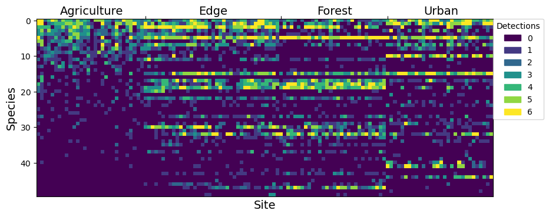
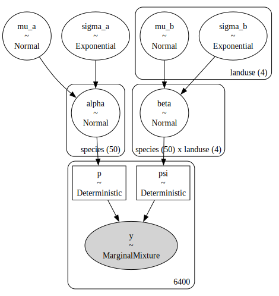
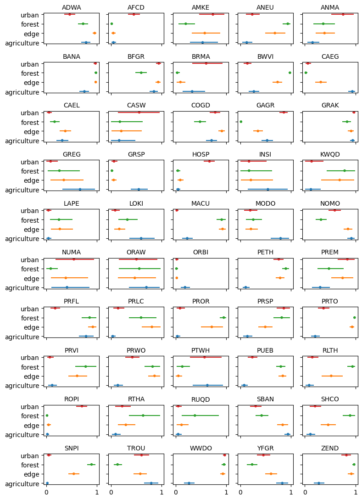

import numpy as np
import pandas as pd
import pymc as pm
import arviz as az
import pandas as pd
import matplotlib.pyplot as plt
from matplotlib.patches import Patch
c = ['STATION ID', 'Agricultural', 'ForestSource', 'Forested', 'Urbanized',
'SPECIES', 'Breed1-1', 'Breed1-2', 'Breed1-3', 'Breed2-1', 'Breed2-2', 'Breed2-3']
prbirds = pd.read_csv('prbirds.csv')[c]
# prbirds['Y'] = prbirds[['Breed1-1', 'Breed1-2', 'Breed1-3']]
prbirds.columns = ['site', 'ag', 'edge', 'forest', 'urban', 'species',
'y1', 'y2', 'y3', 'y4', 'y5', 'y6']
prbirds = prbirds.loc[~prbirds.isna().all(axis=1)]
prbirds['landuse'] = np.where(prbirds.ag, 0,
np.where(prbirds.edge, 1,
np.where(prbirds.forest, 2, 3)))
prbirds['species'] = pd.Categorical(prbirds.species)
prbirds['species_idx'] = prbirds.species.cat.codes
spp = prbirds.species.unique().to_numpy()
prbirds['site'] = pd.Categorical(prbirds.site)
prbirds['site_idx'] = prbirds.site.cat.codes
prbirds['Y'] = prbirds[['y1', 'y2', 'y3', 'y4', 'y5', 'y6']].sum(axis=1)
data = prbirds[['species_idx', 'site_idx', 'landuse', 'Y']]# number of detections at each site for each species
sort_order = data.loc[data.landuse==0].groupby('species_idx').Y.sum().sort_values(ascending=False).index
cells = data.pivot(index='species_idx', columns='site_idx', values='Y').loc[sort_order].to_numpy()
# plot the heat map
fig, ax = plt.subplots(figsize=(10, 5))
im = ax.imshow(cells)
# add a legend
values = np.unique(cells.ravel())
colors = [ im.cmap(im.norm(value)) for value in values]
patches = [ Patch(color=colors[i], label=f'{i}') for i in range(len(values)) ]
plt.legend(title='Detections', handles=patches, bbox_to_anchor=(1, 1), loc=2, borderaxespad=0.)
# move the x axis
loc = data[['site_idx', 'landuse']].drop_duplicates().groupby('landuse').count().cumsum()
ax.set_xticks(loc.to_numpy().flat[:-1])
ax.xaxis.tick_top()
ax.xaxis.set_ticklabels([])
# label each landuse
ax.text(15, 0 - 1, 'Agriculture', va='bottom', ha='center', fontsize=14)
ax.text(49, 0 - 1, 'Edge', va='bottom', ha='center', fontsize=14)
ax.text(83, 0 - 1, 'Forest', va='bottom', ha='center', fontsize=14)
ax.text(113, 0 - 1, 'Urban', va='bottom', ha='center', fontsize=14)
# label each axis
ax.set_xlabel('Site', fontsize=14)
ax.set_ylabel('Species', fontsize=14)
# # annotate some species
# spp = 30
# lab = prbirds.species[prbirds.species.cat.codes == spp].drop_duplicates().squeeze()
# plt.text(28, spp, lab, size=8, ha="right", va="center",
# bbox=dict(boxstyle="round", fc='white'))
# spp = 15
# lab = prbirds.species[prbirds.species.cat.codes == spp].drop_duplicates().squeeze()
# plt.text(28, spp, lab, size=8, ha="right", va="center",
# bbox=dict(boxstyle="round", fc='white'))
# spp = 41
# lab = prbirds.species[prbirds.species.cat.codes == spp].drop_duplicates().squeeze()
# plt.text(96, spp, lab, size=8, ha="right", va="center",
# bbox=dict(boxstyle="round", fc='white'))
# spp = 10
# lab = prbirds.species[prbirds.species.cat.codes == spp].drop_duplicates().squeeze()
# plt.text(96, spp, lab, size=8, ha="right", va="center",
# bbox=dict(boxstyle="round", fc='white'))
plt.show()
Y = data.Y.to_numpy()
species_idx = data.species_idx.to_numpy()
landuse_idx = prbirds.landuse.to_numpy()
spp = prbirds.species.unique().to_numpy()
site = data.site_idx.to_numpy()
K = int(Y.max())
coords = {'landuse': ['agriculture', 'edge', 'forest', 'urban'],
'species': spp}
with pm.Model(coords=coords) as msom:
# detection process priors
mu_a = pm.Normal("mu_a", 0, 2)
sigma_a = pm.Exponential("sigma_a", 1)
alpha = pm.Normal("alpha", mu=mu_a, sigma=sigma_a, dims="species")
# detection process priors
p = pm.Deterministic("p", pm.math.invlogit(alpha[species_idx]))
# occurrence process priors
mu_b = pm.Normal("mu_b", 0, 2, dims='landuse')
sigma_b = pm.Exponential("sigma_b", 1, dims='landuse')
beta = pm.Normal("beta", mu=mu_b, sigma=sigma_b, dims=('species', 'landuse'))
# linear model
psi = pm.Deterministic("psi", pm.math.invlogit(beta[species_idx, landuse_idx]))
# likelihood
pm.ZeroInflatedBinomial('y', p=p, psi=psi, n=K, observed=Y)
pm.model_to_graphviz(msom)
with msom:
test = pm.sample()Auto-assigning NUTS sampler...
Initializing NUTS using jitter+adapt_diag...
Multiprocess sampling (4 chains in 4 jobs)
NUTS: [mu_a, sigma_a, alpha, mu_b, sigma_b, beta]
Sampling 4 chains for 1_000 tune and 1_000 draw iterations (4_000 + 4_000 draws total) took 98 seconds.
100.00% [8000/8000 01:37<00:00 Sampling 4 chains, 0 divergences]
def invlogit(x):
return 1 / (1 + np.exp(-x))
betas = az.extract(test, var_names='beta')
# psis = invlogit(betas)
psi_mean = psis.mean(axis=2)
interval = invlogit(np.quantile(betas, [0.1, 0.9], axis=2))
fig, axs = plt.subplots(10, 5, tight_layout=True, sharey=True, sharex=True, figsize=(8, 11))
axx = axs.flatten()
for i in range(50):
y = coords['landuse']
x = psi_mean[i]
err = interval[:,i,:]
axx[i].set_title(spp[i], fontsize=10)
axx[i].scatter(x, y, marker='.', color=['C0', 'C1', 'C2', 'C3'])
axx[i].hlines(y, err[0], err[1], color=['C0', 'C1', 'C2', 'C3'])
# axx[i].errorbar(x, y, xerr=err, fmt='.', color='gray',
# ecolor=['C0', 'C1', 'C2', 'C3'])
plt.show()
# c = {'species': 'WWDO'}
# az.summary(test, var_names='alpha', coords=c)| mean | sd | hdi_3% | hdi_97% | mcse_mean | mcse_sd | ess_bulk | ess_tail | r_hat | |
|---|---|---|---|---|---|---|---|---|---|
| alpha | 0.536 | 0.084 | 0.376 | 0.691 | 0.001 | 0.001 | 4659.0 | 2381.0 | 1.0 |
# fig, ax = plt.subplots(figsize=(8, 5))
# ps = invlogit(az.extract(test).alpha)
# for p in ps:
# az.plot_dist(p, ax=ax, plot_kwargs={'alpha':0.7})
# ax.spines.right.set_visible(False)
# ax.spines.top.set_visible(False)
# # ax.spines.left.set_visible(False)
# ax.set_yticklabels([])
# ax.set_ylabel('Density', fontsize=14)
# ax.set_xlabel('Probability of detection', fontsize=14)
# plt.show()